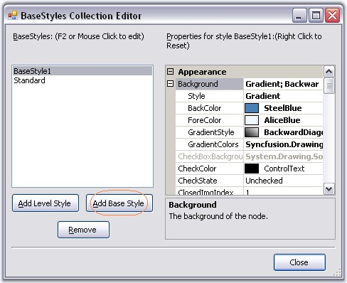
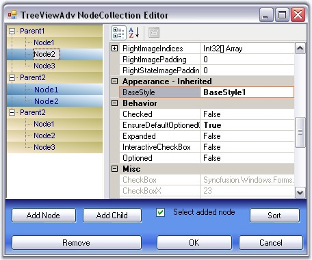
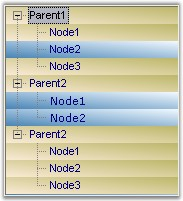

Make a Node's Style Inherit from Another Base Style
Apart from the default style (Standard Style),we can also create custom Base styles using the Base Styles Collection Editor. Clicking the Add Base Style button, will add a new BaseStyle whose properties can be edited.

Figure 1157: Base Styles added by using the BaseStyles Collection Editor
This new base style can be applied to any of the nodes, using TreeNodeAdv.BaseStyle property of the respective nodes.

Figure 1158: BaseStyle property in the TreeViewAdv NodeCollection Editor
This overrides the Standard Style settings for the specified nodes and displays the image as follows.

Figure 1159: Node Style inherited from another Base Style